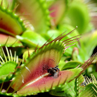

|  |
Вене́рина мухоло́вка (лат. Dionaea muscipula) — вид хищных растений из монотипного рода Дионея семейства Росянковые (Droseraceae). Растение болотистых областей восточного побережья Соединенных Штатов Америки (Северная и Южная Каролины). Венерина мухоловка ловит своих жертв (насекомых, паукообразных) с помощью специализированного ловчего аппарата, образованного из краевых частей листьев. Захлопывание ловушки инициируется тоненькими триггерными (чувствительными) волосками на поверхности листьев. Для захлопывания ловчего аппарата необходимо оказать механическое воздействие минимум на два волоска на листе с интервалом не более 20 секунд. Такая избыточность обеспечивает защиту от случайного захлопывания в ответ на падение объектов, не имеющих питательной ценности (капли дождя, мусор и т. д.). Более того, переваривание начинается как минимум после пятикратной стимуляции чувствительных волосков. |